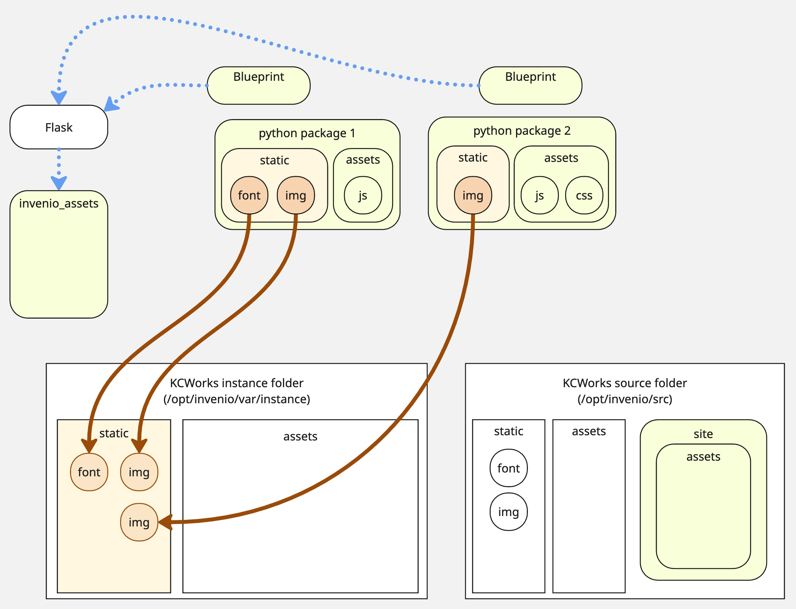
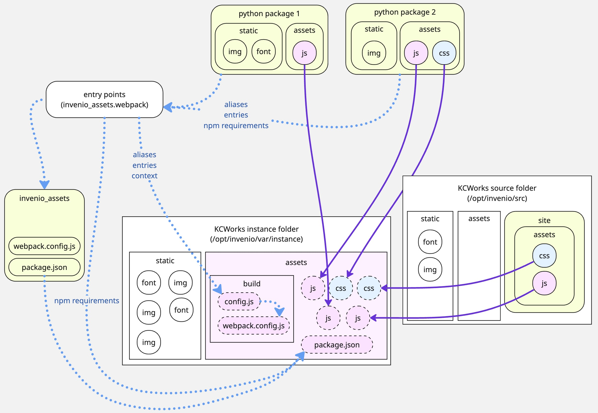
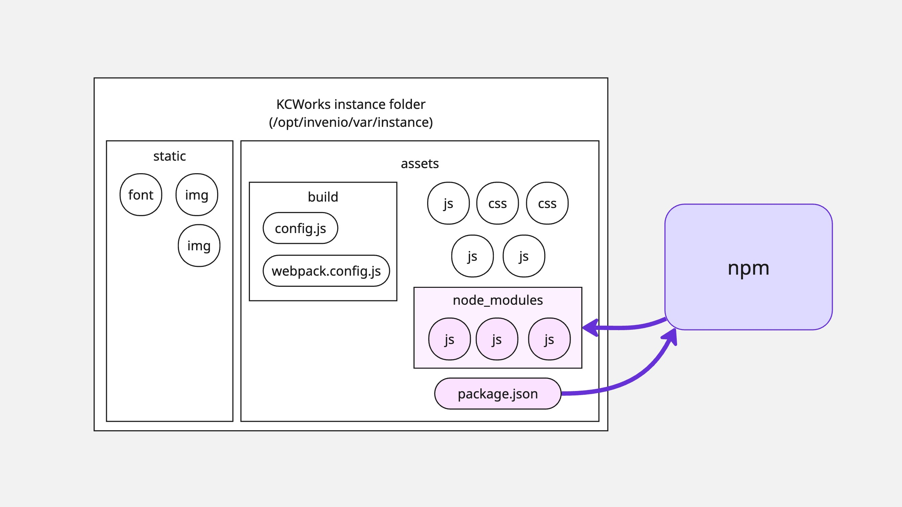
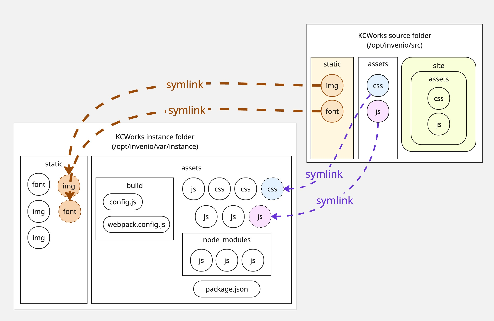
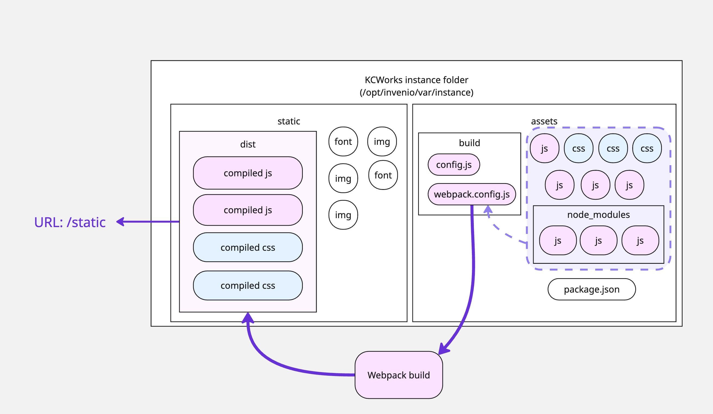

Build Processes¶
Building the Documentation¶
The documentation is built using Sphinx. The documentation source files are located in the docs/source directory.
To build the documentation, run the following command:
sphinx-build -b html docs/source docs/build/html
This will build the documentation and save it in the docs/build/html directory.
Note
The documentation is built automatically and published to the gh-pages branch when a change is pushed or PR is merged into the main branch.
Building JS, CSS, and Other Static Assets¶
InvenioRDM, the foundation for KCWorks, generally bundles its frontend asset file as part of its python packages. This means that the JavaScript and CSS (and .less and .scss files) cannot simply be installed as npm dependencies. They must be gathered from the python packages and built in a central location. Similarly, where those js files depend on npm packages, the various python packages can declare their own JavaScript dependencies, which must be included in that central build.
Build script and CLI commands¶
The full build process is handled in KCWorks by the scripts/build-assets.sh script, intended to be run inside the web-ui container. This script handles the following commands from InvenioRDM’s standard build process:
From the KCWorks source directory, the script runs the following commands:
Note
The invenio webpack commands are aliases for the flask webpack commands. These are defined by the flask-webpackext package. But InvenioRDM exposes all flask commands using the invenio prefix as an alias for the flask prefix.
1. invenio webpack collect -v¶

Gathers static files that don’t require building from the python packages, based on the static files locations defined in the application’s blueprints. These files are placed in the /opt/invenio/var/instance/static directory and are exposed at the /static URL.
2. invenio webpack clean create¶

This performs four actions to set up for the build:
Deletes the existing built assets directory (
/opt/invenio/var/instance/static/dist).Copies all asset source files to the central Webpack build context directory (
/opt/invenio/var/instance/assets). This covers all of the files that need to be built by WebpackSymlinks the
webpack.config.jsfile supplied byinvenio-assetsinto the/opt/invenio/var/instance/assets/builddirectory.Generates a new
package.jsonfile in the top-levelassetsdirectory. This begins with the base package.json provided byinvenio-assetsand injects all of the additional npm dependencies declared in theinvenio_assets.webpackentrypoints.Creates a new
config.jsfile (in the/opt/invenio/src/assets/builddirectory) that can by imported by thewebpack.config.jsand provides Webpack withthe
buildcontext providing directory paths for the gathered source files (assets/build) and final built files (static/dist) as well as any other static files (static)the cumulative list of
aliasesthat allow Webpack to find files in the subfolders ofassetsvia../../less,@js, etc.the webpack
entrypoints, which are the files that will be built by Webpack. (Not to be confused with the pythonentrypointsdefined byinvenio_assets.webpack.)
(Under the hood these steps are all handled by pywebpack via flask_webpackext and the WebpackBundleProject class.)
The clean subcommand instructs invenio-assets to delete the existing built assets directory (/opt/invenio/var/instance/static/dist) and recreate it. If you want to keep the existing build assets and simply copy into it, you can use the create subcommand without the clean subcommand.
3. invenio webpack install¶

Runs the npm install defined in the newly assembled package.json file in /opt/invenio/var/instance/assets. Dependencies are downloaded into /opt/invenio/var/instance/assets/node_modules.
4. cd /opt/invenio/src && invenio shell /opt/invenio/src/scripts/symlink_assets.py¶

This symlinks all of the files in the source assets directory (/opt/invenio/src/assets) to the /opt/invenio/var/instance/assets directory. This includes all js, less, and scss files, as well as the translations directory. These files are not included in the installable kcworks python package, and so were not included earlier in the file discovery and project assembly that flask_webpackext performs based on entry points.
5. invenio webpack build¶

Runs npm run build command to execute the webpack command defined in the package.json file. This builds the assets, placing the built files in the /opt/invenio/var/instance/static/dist directory.
The actual webpack build command is:
NODE_PRESERVE_SYMLINKS=1 npm_config_report=1 NODE_ENV=production|development webpack --config ./build/webpack.config.js
The webpack.config.js in /opt/invenio/var/assets/build is the main config file controlling Webpack itself, supplemented with aliases and entries from the config.js file in the same directory. The build context (from config.js) is set to /opt/invenio/var/instance/assets. The webpack command sets webpack mode as either “production” or “development” based on the value of the NODE_ENV environment variable.
The BundleTracker plugin in webpack.config.js writes the manifest file into the /opt/invenio/var/instance/static/dist directory to tell Python where the built assets are located.
The resulting dist folder, holding the compiled assets, is exposed at the /static/dist/ URL.
Note
In vanilla InvenioRDM, the flask webpack buildall command is used to run the create, install, and build commands in sequence. It does not run the collect command, and does not run the script to symlink the development assets.
Watching files for changes¶
The package.json file in the assets directory includes the start script, which will be triggered by flask webpack start and runs webpack with the same config file but NODE_ENV=development. This will not minify the compiled assets, leaving them readable and easier to debug. This will also spin up the live reload plugin.
Key file locations¶
config.js file in
/opt/invenio/src/assets/build/built css and js files in
/opt/invenio/var/instance/static/dist/public url is
static/dist/
static css and js files (not needing build) in
/opt/invenio/var/instance/static/cssand/opt/invenio/var/instance/static/jspublic url is
static/css/andstatic/js/
webpack build context is
/opt/invenio/var/instance/assets/manifest.json is
/opt/invenio/var/instance/static/dist/manifest.json
Key python packages involved¶
invenio-assets
flask-webpackext
flask-collect
pywebpack